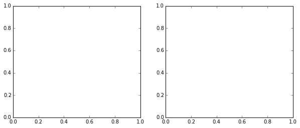

In [1]:
%matplotlib inline
import matplotlib.pyplot as plt
import numpy as np
np.random.seed(42)
theta_true = (25, 0.5)
xdata = 100 * np.random.random(20)
ydata = theta_true[0] + theta_true[1] * xdata
# add scatter to points
xdata = np.random.normal(xdata, 10)
ydata = np.random.normal(ydata, 10)
data = {'x': xdata, 'y': ydata}
In [2]:
import pymc
print(pymc.__version__)
import theano
import theano.tensor as T
3.0
In [15]:
pymc.Flat.dist()
Out[15]:
<pymc.distributions.continuous.Flat at 0xacfd490>
In [39]:
%pdb
Automatic pdb calling has been turned ON
In [26]:
import pymc
import theano.tensor as T
with pymc.Model() as model:
alpha = pymc.Uniform('intercept', -100, 100)
# Create custom densities
beta = pymc.DensityDist('slope', lambda value: -1.5 * T.log(1 + value**2), testval=0)
sigma = pymc.DensityDist('sigma', lambda value: -T.log(T.abs_(value)), testval=1)
# Create likelihood
like = pymc.Normal('y_est', mu=alpha + beta * xdata, sd=sigma, observed=ydata)
start = pymc.find_MAP()
step = pymc.NUTS(scaling=start) # Instantiate sampler
trace = pymc.sample(10000, step, start=start, progressbar=False)
In [6]:
with pymc.Model() as model:
intercept_prior = pymc.Uniform.dist(-100, 100)
slope_prior = pymc.DensityDist.dist(lambda value: -1.5 * T.log(1 + T.pow(value, 2)), testval=1)
sigma_prior = pymc.DensityDist.dist(lambda value: -T.log(T.abs_(value)), testval=1)
family = pymc.glm.families.Normal(priors={'sd': ('sigma', sigma_prior)})
pymc.glm.glm('y ~ x', data,
intercept_prior=intercept_prior,
regressor_prior=slope_prior,
family=family)
step = pymc.NUTS() # Instantiate MCMC sampling algorithm
trace = pymc.sample(2000, step, progressbar=False) # draw 2000 posterior samples using NUTS sampling
In [20]:
pymc.traceplot(trace);

In [21]:
def compute_sigma_level(trace1, trace2, nbins=20):
"""From a set of traces, bin by number of standard deviations"""
L, xbins, ybins = np.histogram2d(trace1, trace2, nbins)
L[L == 0] = 1E-16
logL = np.log(L)
shape = L.shape
L = L.ravel()
# obtain the indices to sort and unsort the flattened array
i_sort = np.argsort(L)[::-1]
i_unsort = np.argsort(i_sort)
L_cumsum = L[i_sort].cumsum()
L_cumsum /= L_cumsum[-1]
xbins = 0.5 * (xbins[1:] + xbins[:-1])
ybins = 0.5 * (ybins[1:] + ybins[:-1])
return xbins, ybins, L_cumsum[i_unsort].reshape(shape)
def plot_MCMC_trace(ax, xdata, ydata, trace, scatter=False, **kwargs):
"""Plot traces and contours"""
xbins, ybins, sigma = compute_sigma_level(trace[0], trace[1])
ax.contour(xbins, ybins, sigma.T, levels=[0.683, 0.955], **kwargs)
if scatter:
ax.plot(trace[0], trace[1], ',k', alpha=0.1)
ax.set_xlabel(r'$\alpha$')
ax.set_ylabel(r'$\beta$')
def plot_MCMC_model(ax, xdata, ydata, trace):
"""Plot the linear model and 2sigma contours"""
ax.plot(xdata, ydata, 'ok')
alpha, beta = trace[:2]
xfit = np.linspace(-20, 120, 10)
yfit = alpha[:, None] + beta[:, None] * xfit
mu = yfit.mean(0)
sig = 2 * yfit.std(0)
ax.plot(xfit, mu, '-k')
ax.fill_between(xfit, mu - sig, mu + sig, color='lightgray')
ax.set_xlabel('x')
ax.set_ylabel('y')
def plot_MCMC_results(xdata, ydata, trace, colors='k'):
"""Plot both the trace and the model together"""
fig, ax = plt.subplots(1, 2, figsize=(10, 4))
plot_MCMC_trace(ax[0], xdata, ydata, trace, True, colors=colors)
plot_MCMC_model(ax[1], xdata, ydata, trace)
plot_MCMC_results(xdata, ydata, np.asarray(trace))
plt.show()
---------------------------------------------------------------------------
TypeError Traceback (most recent call last)
<ipython-input-21-bd67eda6c7d1> in <module>()
54 plot_MCMC_model(ax[1], xdata, ydata, trace)
55
---> 56 plot_MCMC_results(xdata, ydata, np.asarray(trace))
57 plt.show()
<ipython-input-21-bd67eda6c7d1> in plot_MCMC_results(xdata, ydata, trace, colors)
51 """Plot both the trace and the model together"""
52 fig, ax = plt.subplots(1, 2, figsize=(10, 4))
---> 53 plot_MCMC_trace(ax[0], xdata, ydata, trace, True, colors=colors)
54 plot_MCMC_model(ax[1], xdata, ydata, trace)
55
<ipython-input-21-bd67eda6c7d1> in plot_MCMC_trace(ax, xdata, ydata, trace, scatter, **kwargs)
23 def plot_MCMC_trace(ax, xdata, ydata, trace, scatter=False, **kwargs):
24 """Plot traces and contours"""
---> 25 xbins, ybins, sigma = compute_sigma_level(trace[0], trace[1])
26 ax.contour(xbins, ybins, sigma.T, levels=[0.683, 0.955], **kwargs)
27 if scatter:
<ipython-input-21-bd67eda6c7d1> in compute_sigma_level(trace1, trace2, nbins)
1 def compute_sigma_level(trace1, trace2, nbins=20):
2 """From a set of traces, bin by number of standard deviations"""
----> 3 L, xbins, ybins = np.histogram2d(trace1, trace2, nbins)
4 L[L == 0] = 1E-16
5 logL = np.log(L)
/home/wiecki/envs/pymc3/local/lib/python2.7/site-packages/numpy/lib/twodim_base.py in histogram2d(x, y, bins, range, normed, weights)
648 xedges = yedges = asarray(bins, float)
649 bins = [xedges, yedges]
--> 650 hist, edges = histogramdd([x, y], bins, range, normed, weights)
651 return hist, edges[0], edges[1]
652
/home/wiecki/envs/pymc3/local/lib/python2.7/site-packages/numpy/lib/function_base.py in histogramdd(sample, bins, range, normed, weights)
312 smax = ones(D)
313 else:
--> 314 smin = atleast_1d(array(sample.min(0), float))
315 smax = atleast_1d(array(sample.max(0), float))
316 else:
TypeError: float() argument must be a string or a number

In [25]: